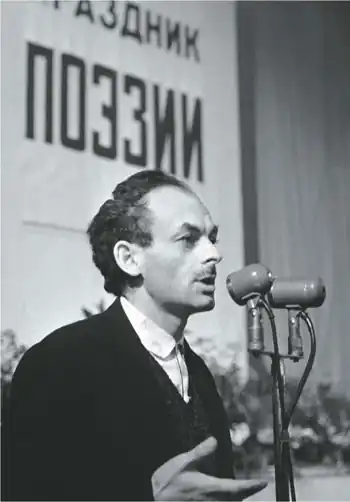
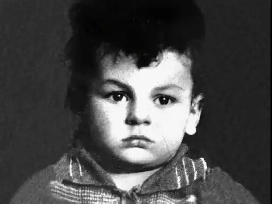
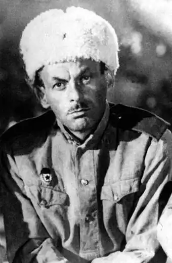

Ім'я: Булат Окуджава (Bulat Okudgava)
Дата народження: 9 травня 1924 року
Дата смерті: 12 червня 1997 року Вік: 73 року Місце народження: Москва, СРСР Місце смерті: Кламар, Франція Діяльність: поет, бард, композитор Сімейний стан: одружений Всенародному улюбленцю —поету, барду, письменника, сценариста і перекладачеві – Булату Окуджаві у травні цього року виповнилося б 92 роки. Народився в післяреволюційної Росії і пройшов до постперебудовної Росії, Окуджава повною мірою випробував на собі всі тяготи цього нелегкого шляху. Напівзаборонений, не раз піддавався несправедливої критики, Окуджава жив і творив як дихав. Мало хто вважав, що так живе кожен: "Як він дихає, так і пише, не намагаючись догодити". І завжди був почутий усіма. Народився Булат Окуджава 9 травня 1924 року в Москві, в знаменитому пологовому будинку імені Грауэрмана, де свого часу з'явилися на світ багато відомих особистості. Його батько, грузинський партійний працівник Шалва Окуджава, був направлений з Тіфліса в Москву на партучебу. Сім'ї Окуджави виділили дві кімнати у п'ятикімнатній квартирі в одному з арбатских будинків. До революції ця квартира належала фабриканту Канівському, який після "ущільнення" займав з сім'єю одну кімнату. В кінці 1924 року Шалву Окуджаву відкликали назад до Грузії на партійну роботу. Маленький Булат залишився з мамою Ашхен і нянею, яка в основному займалася його вихованням. В автобіографічному романі "Скасований театр", написаному Окуджавой від третьої особи, він згадував про ті часи своєї біографії: "Далекий тато здавався намальованим і неправдоподібним. Примарна мама з'являлася на мить, зрідка, вечорами, якщо він не встиг ще заснути, і, втомлена після натхненного трудового дня, притискала його до себе, але все якось відчужено, судорожно, з іншого світу, продовжуючи думати про щось своє". У 1929 році батько ненадовго повернувся в Москву, але через рік отримав призначення на посаду першого секретаря міськкому партії в Тифлісі, і сім'я переїхала в Грузію. Через рік Булат пішов у перший клас російської школи. Крім загальноосвітньої, хлопчика віддали ще і в музичну школу, оскільки у нього обнаружишся абсолютний слух, але закінчити її Булату не вдалося, оскільки сім'я весь час переїжджала. У 1932 році Шалва Степанович був переведений на роботу в Нижній Тагіл, де очолив організацію будівництва знаменитого Уралвагонзаводу. У 1934 році у подружжя народився другий син, Віктор. Починаючи з цього року, коли в Ленінграді був убитий Сергій Миронович Кіров, колесо політичного терору стало набирати обертів. До Нижнього Тагілу воно докотилося в лютому 1937 року, і Шалва Окуджава, який у той час очолював міськком партії, був заарештований одним з перших. Ашхен з дітьми терміново повернулася до Москви. Її виключили з партії, відсторонили від партійної роботи, і вона, влаштувавшись касиром в якусь артіль, намагалася потрапити на прийом до Берії, з яким була знайома ще по партійній роботі в Тифлісі. Але він її не прийняв, а одного разу вночі за нею просто "прийшли". Діти залишилися під опікою бабусі Марії Вартановны, матері Ашхен. "Ми весь час боялися, – згадував потім Булат Шалвович, – що нас з братом заберуть у дитприйомника". Але все обійшлося. А можливо, про них просто забули. Грузинська рідня, як могла, допомагала осиротілим дітям, але жилося все одно голодно. Бабуся всі сили віддавала маленькому Віті, а тринадцятирічний Булат виявився наданий сам собі. В автобіографічній прозі Окуджава писав: "У тринадцять років я уявляв себе в чорних штанях, білій сорочці апаш і з фотоапаратом "лійка" через плече", – це ще відгомін благополучного життя з батьками. А через два роки зразком для наслідування у нього вже був "московсько-арбатский шахрай, блатний. Чоботи в гармошку, тільник, піджачок, фуражечка, чубчик і фікса золота". Але були й інші приклади: над його ліжком висів портрет лідера іспанських комуністів Долорес Ібаррурі. В Іспанії йшла громадянська війна, і, як будь-який радянський хлопчисько, він мріяв втекти на цю війну, щоб відзначитися. Булат обожнював льотчика-випробувача. Героя Радянського Союзу Валерія Чкалова, що здійснив перший безпосадочний переліт через Північний полюс з Москви в Ванкувер. Він марив папанинцами і челюскинцами, героями Арктики, в загальному, був таким же, як його однолітки, "червоним хлопчиком", як він сам себе згодом одного разу назвав. Тоді Булат ще не знав, що батько розстріляний. Радіо та газети невпинно рапортували про успіхи соціалізму, про великих будівництвах п'ятирічки, про інтернаціоналізм і прийдешнє щастя всього людства. Молодь була впевнена, що живе в найкращою, самою передовою країні світу. Булат Окуджава в дитинстві Щоб Булат остаточно не відбився від рук, одна з сестер матері, Сільвія, домогосподарка, запропонувала надіслати племінника до неї в Тбілісі. Літні канікули Булат проводив там з самого дитинства, а влітку 1940 року він переїхав до неї жити. Восени він був зарахований у школу. До того часу Булат вже почав писати вірші. Пізніше, в оповіданні "Геній", він опише курйозний випадок, коли, повіривши на слово дядька, який сказав, що його пора вже, як Пушкіна, видавати, він відправився в Союз письменників на вулицю Мачабелі. Секретар Союзу був чимало здивований його візитом, але знайшовся і відповів хлопчикові, що з задоволенням видав би його твори, та ось біда, скінчилася папір. Булата це анітрохи не збентежило. І ввечері за вечерею він розповів дядькові, що був у Спілці письменників і що там обіцяли видати його вірші, але не виявилося папери. Дядько пожартував над ним, пообіцявши папір дістати. І Булат, окрилений, на другий день знову відправився туди ж, але нікого не застав, так як було літо, час відпусток. Але чи так це було насправді, як забавно описав Окуджава цей епізод біографії своєї юності в оповіданні, достовірно невідомо. Через рік почалася Велика Вітчизняна війна, на яку неповнолітній Булат пішов добровольцем. Спочатку їх з приятелем виганяли з військкомату, але вони знову і знову просилися на фронт. Тоді їм доручили розносити порядку по домівках. Не всюди їх приймали з радістю, бувало, і поколачивали, і спускали зі сходів. Зрештою хлопці так набридли воєнкому, що він дав їм бланки повісток і сказав: "Самі будете заповнювати! Моя рука не винна, запам'ятайте". Так, у квітні 1942 року, Булат Окуджава був направлений в запасний мінометний дивізіон. Але все виявилося зовсім не таким, як мріялося хлопчакам. Вони уявляли, що будуть битися на передовій, можливо, стануть героями. Насправді їх довго не приводили до присяги, кілька разів перевозили з однієї бази на іншу, не відразу поставили на утримання. Всі голодували, жебракували їжею по навколишніх селах, змінюючи обмундирування на хліб. На місце солдати і командири прибутку роздягнені, разутые, брудні і голодні. Про це Юрію Зростанню дуже скупо Булат Окуджава розповідав в одному зі своїх інтерв'ю: ".. .війна вчила мужності і загартування, але загартування і в таборі отримували. А в основному це був жах і розтління душ". Через деякий час, під Моздоком, Булат був поранений: німецький літак-розвідник обстріляв наші позиції. Після госпіталю Булат повернувся на фронт, служив радистом у важкій артилерії, але поранення постійно давала про себе знати, і в квітні 1944 року його демобілізували. На фронті він написав свою першу пісню "Нам в холодних теплушках не спалося", але її текст, на жаль, не зберігся. Повернувшись додому, Булат здав екстерном іспити за десятий клас середньої школи і в 1945 році вступив до Тбіліського університету на філологічний факультет. В університеті молодь дивилася на нього з повагою: як же, фронтовик, герой. "Тихе виразне "ура" супроводжувало мене за університетськими коридорами. Посмішки, компліменти обволакивали мене і заколисували", —пізніше писав він. Булат Окуджава – біографія особистого життя Згадуючи біографію своєї юності, Окуджава зізнавався, що був страшенно влюбчивым. Дівчатам Булат теж подобався. Середнього росту, гарна, очі темно-карі і копиця чорних кучерів. Неймовірно привабливий і ставиться до протилежної статі з надзвичайним пієтетом, що, природно, відразу підкуповувало. Але, напевно, найголовніше —він дуже добре співав під гітару. Тому не дивно, що вже в 23 роки Булат виявився одруженим. Сестри Смольяниновы – Іра і Галя – вчилися з ним на одному факультеті. З Галею, яка була молодша за нього на два роки, у нього "закрутився" роман. Окуджава до того часу жив уже самостійно, знімав кутову кімнатку в комуналці. У 1947 році Булат і Галя зіграли весілля. Крім цього, ще одна важлива подія відбулася в житті Булата: з табору повернулася його мама. У 1948 році в Тифлісі поетичний гурток, організований друзями Окуджави, був розгромлений, деякі з друзів Булата були арештовані. Їм поставили в провину в організації, яка нібито готувала замах на Лаврентія Берію. Булата не чіпали, але він отримав попередження. А через рік, на новій хвилі політичного терору, маму знову заарештували і заслали в Сибір на вічне поселення. У 1950 році молоді фахівці Булат і Галина Окуджава отримали розподіл в середню школу Калузької області, в село Шамордино. Про це періоді біографії особистому житті Булата майже нічого не відомо. Але. наприклад, в автобіографічному оповіданні "Окремі невдачі серед суцільних успіхів" він пише: "Це було давно. Я був молодий. З сільської школи мене перевели в міську, і тут життя моє раптово покотилася під укіс… Я знімав кут в будиночку на околиці. Стояла гнила осінь. Учням я не подобався, і вони отруювали моє існування. Друзів ще не було. Жити не хотілося". І далі йде розповідь про те, як він ледь не зламався, став випивати з випадковим приятелем. І так тривало багато місяців. Але сталося диво, і він повернувся до себе самому". З сільської школи Окуджава отримав переклад в Калугу. Там він спочатку працював учителем, а потім його запросили в міську газету. У 1954 році у подружжя народився син Ігор. Поворотним у біографії Булата Окуджави став 1956 рік. Минуло три роки після смерті Сталіна, був заарештований і страчений Берія, до влади прийшов Микита Сергійович Хрущов. В лютому 1956 року відбувся черговий XX з'їзд КПРС, на якому було прийнято постанову "Про культ особистості і його наслідки".